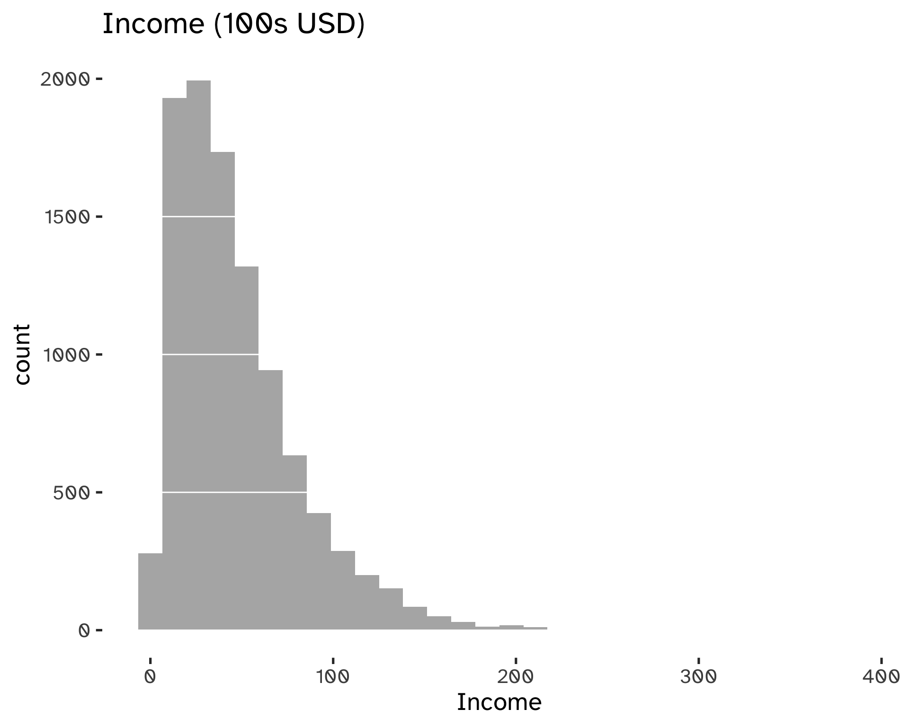

Quantile Regression

Introduction
What is Business Analytics? It is an applied discipline, tasked with gaining insight into business operations and helping to make better, fact-based decisions: a basic pillar of being data-driven. It combines Statistics, Computer Sciences, Management Science, Operational Research, and much more.
It has three main components:
- Descriptive analytics: providing insight into business questions by summarizing and visualizing observed data. Typically based on simple summaries and charts1.
- Predictive analytics: providing insight into the possible future by extrapolating patterns found in the historical data. Typically making use of statistical or machine learning predictive models (remember the Statistical Learning and Data Analytic courses).
- Prescriptive analytics: providing ways to make the best possible decisions based on the available information.
What is the role of Quantile Regression in Business Analytics?
The Ordinary-Least-Squares (OLS) based linear regression is a well-known approach when it comes to model relationships between variables, such as:
Y_i = \beta_0 + \beta_1 x_{1i} + \beta_2 x_{2i} + ... + \beta_p x_{p i + \epsilon_i} \tag{1}
There are fundamental assumptions behind this model:
- Independence of observations and error terms.
- The error terms are identically distributed.
- We have homoskedasticity and zero mean2.
- Normality of errors, as in \epsilon \stackrel{iid} {\sim} N(0, \sigma^2_{\epsilon})3.
The main focus is to estimate the mean of the distribution: all the assumptions lead to the following formula.
\mathbb{E} [Y_i \vert X = x_i] = \beta_0 + \beta_1 x_1 + ... + \beta_p x_p \tag{2}
Quantile regression allows to deal with data that cannot be described with a normal distribution and that can be summarised effectively using the mean4.
The main consequence of having homoskedastic and normal errors are:
- Symmetry.
- If the mean and scaled are known, we can assume that we know the whole distribution. Therefore, knowing how the mean changes explains all the changes in the distribution.
However, this is often not the case:
Code
incomeEx <- readr::read_csv(
pathmaker(
"data/incomeSurvey.csv"
)
)Rows: 10111 Columns: 10
── Column specification ────────────────────────────────────────────────────────
Delimiter: ","
chr (4): eth, htype, ced, rural
dbl (6): age, ed, hkids, cinc, lcinc, hid
ℹ Use `spec()` to retrieve the full column specification for this data.
ℹ Specify the column types or set `show_col_types = FALSE` to quiet this message.Code
incomeEx$income <- incomeEx$cinc/1000
ggplot(
incomeEx
) +
geom_histogram(
aes(
income
),
# color = "grey50",
fill = "grey70"
) +
geom_hline(
yintercept = seq(
0,
2000,
500
),
color = "white"
) +
labs(
x = "Income",
title = "Income (100s USD)"
)`stat_bin()` using `bins = 30`. Pick better value with `binwidth`.
Many variables are not symmetric. Moreover, we are often not only interested in the mean, but in understanding extremes. Since linear regression model cannot give the full description of the distribution and everything is described by its mean, we need an alternative Framework.
We do not need to forget that linear regression is appropriate for several applications and comes with many practical and theoretical reason to explain its widespread adoption. For example, it is computationally feasible and easy to implement and can be adapted to handle heteroskedasticity and robustness. Moreover, it can be generalized to handle the non-gaussian case and even non-linearity5.
Quantiles
Quantiles are defined mathematically as:
Q(p) = \mathrm{inf} \{ x: P(X \leq x) \geq p \} \tag{3}
This is strictly related to the cumulative distribution function. The quantile of order \alpha can also be interpred as that point in the distribution for which you have a probability \alpha of observing a value less than that quantile6.
We can compute a set of quantiles to help prove the point. Note that the mean of the distribution is 47.0563867.
Code
pquant <- quantile(incomeEx %>% pull(income), c(0.1,0.25,0.5,0.75,0.9))
pquant 10% 25% 50% 75% 90%
11.64731 21.86632 39.18834 63.15703 92.93739 There is a noticeable positive difference between median and mean, indicating a right-skewed distribution. Computing such differences helps in understanding the shape of our distribution.
We notice that the difference between the 75th and the 50th quantile is larger than the difference between the 50th and the 25th percentile: this is an indication of an asymmetry in the distribution. The same goes when comparing the the more extreme tails (e.g. the 10th and 90th quantile):
Code
pquant[4]- pquant[3]; pquant[3] - pquant[2] 75%
23.96869 50%
17.32201 Code
pquant[5]- pquant[3]; pquant[3] - pquant[1] 90%
53.74905 50%
27.54102 Quantiles are not only theoretical: we can build an Empirical Cumulative Distribution function that describes the cumulative frequencies of the observed values in our data.
For example, for an iid sample:
\hat F = \frac{\mathrm{number \ of \ observations} \leq t}{n} \tag{4}
Footnotes
Any predictive or prescriptive model is based on some steps of descriptive analytics.↩︎
This last one, however, is not strictly necessary.↩︎
This assumption allows for inference on the model parameters.↩︎
Warning: the mean is not a robust indicator of position.↩︎
Generalized Linear Models.↩︎
In other words, it determines a specific point in the distribution. For example, the median is the quantile of order 0.5: you have a 50% probability of observing a value lower than the median.↩︎